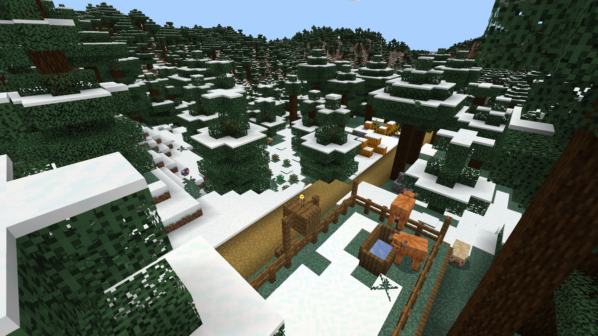
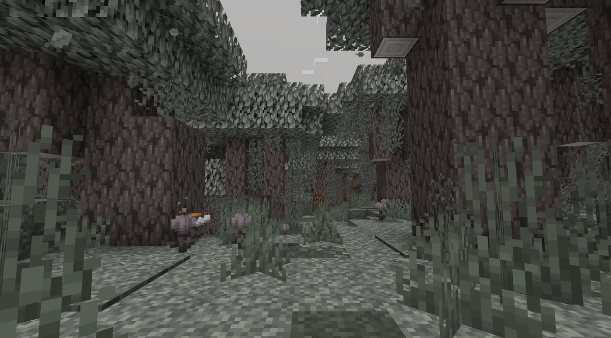
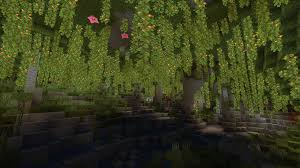

My favorite woodland biomes
Dark forest
Forest variant filled with dark oak trees.
The trees are often packed close enough together, letting mobs spawn easily.
Woodland mansions exclusively appear in this biome.

Taiga
A forest of spruce trees that is populated by ferns, berry bushes, foxes, and rabbits.

Cherry Grove
An area where cherry trees generated.
They are easy to distinguish by their pink leave blocks
That have petals that fall to the ground.
My top favorite biome too!

Pale Garden
A dark, desolate area where no mobs spawn besides the creaking,
a wooden creature that attacks when you're not looking.
They can't be defeated by attacking it directly.
You will find pale oak and moss parts.
My most disliked biome but very beautiful!

Lush caves
Caverns filled with moss, bushes, vines, glow berries, dripleaf plants.
Axolotls and tropical fish can appear here.
These caves are always underground below azalea trees.
